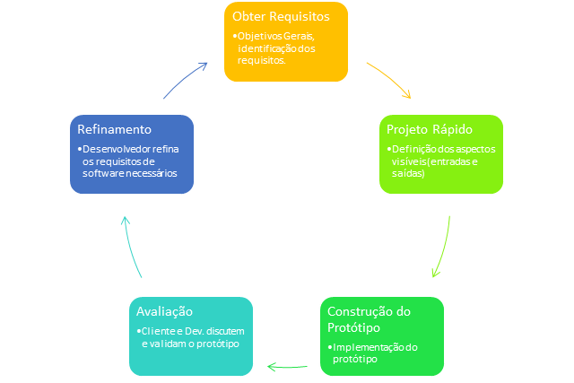

Objetivo do Modelamento
A Prototipação é uma técnica bastante popular e de fácil aplicação. Essa técnica consiste em desenvolver rapidamente um “rascunho”, do que seria o sistema de informação quando este estiver finalizado. Um protótipo normalmente apresenta pouco mais do que a interface do software a ser desenvolvido, ilustrando como as informações seriam inseridas e recuperadas no sistema e apresentando alguns exemplos com dados fictícios de quais seriam os resultados apresentados pelo software, principalmente em forma de relatórios. A utilização de um protótipo pode assim, evitar que, após meses ou mesmo anos de desenvolvimento, descubra-se, ao implantar o sistema, que o mesmo não atende completamente as necessidades do cliente devido principalmente a falhas de comunicação durante as entrevistas iniciais.
Assim, depois de determinar quais modificações necessárias ao sistema após o protótipo ter sido apresentado aos usuários, pode-se modificar a interface do protótipo de acordo com as novas especificações e apresentá-lo novamente ao cliente de forma muito mais rápida.